fem_routines module¶
This module includes finite element functions [1]. On finite element level there are functions that generate matrices and vectors, and on global level there are functions that assemble the elemental components into one an overall system.
All routines are based on a linear axisymmetric element with a nodal numbering as illustrated in the figure below.

-
fem_routines.consistent_mass_matrix(nodes, elements, elem_id, data, elem_count)¶ Assemble the global consistent mass matrix for 4-noded axisymmetric finite elements based on the exact integration
- Parameters
nodes – (float) array [NP, 2] with the radial and vertical coordinate of each node (NP: total number of nodes)
elements – (int) array [NE, 4] with the node numbers of each finite element corner (NE: total number of elements)
elem_id – (int) array [NE, 8] with the equation number of each dof in each element
data – (dict) with FEM input parameters
elem_count – (int) array [NL, 2] with number of elements in radial and vertical direction of each soil layer (NL: total number of layers)
- Returns
(float) csr_matrix [NEQ, NEQ] global consistent mass matrix (NEQ: total number of equations)
-
fem_routines.elem_mass_matrix(xyz, rho, elem_type)¶ Construct the mass matrix for a 4-noded axi-symmetric element.
- Parameters
xyz – (float) array [4, 2] with the radial and vertical coordinate of each node of the element
rho – (float) mass density in the element
elem_type –
(int) parameter to determine the consistency of the mass
elem_type == 1: consistent mass matrix with integration points at nodes
elem_type == 2: consistent mass matrix with exact numerical integration
elem_type == 3: lumped mass matrix obtained by summing rows of consistent mass matrix with exact integration
elem_type == 4: consistent mass matrix obtained with 1 integration point
elem_type == 5: lumped mass matrix obtained by summing rows of consistent mass matrix with 1 integration point
- Returns
(float) array [8] or [16] element mass matrix in one direction (size depends on consistency)
-
fem_routines.elem_stiff_matrix(xyz, e, nu)¶ Construct the stiffness matrix for a 4-noded axi-symmetric element.
The finite element is fully integrated and is based on EAS or incompatible modes. The enhanced strains are implemented as suggested by [2]. An additional strain field is added to the iso-parametric one by introducing the EAS parameters
 which are statically condensated on element level. The enhanced
strains are determined as 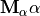 with
which are statically condensated on element level. The enhanced
strains are determined as 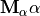 with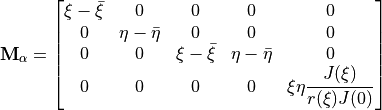
The natural coordinates are denoted as
 and
and  , and the area averaged coordinates are denoted
with a bar on top. The Jacobian determinant is denoted as
, and the area averaged coordinates are denoted
with a bar on top. The Jacobian determinant is denoted as  . The enhanced strain components are
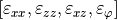.
. The enhanced strain components are
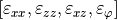.For the sake of numerical efficiency, the finite element is analytically integrated assuming that it is undistored.
- Parameters
xyz – (float) array [4, 2] with the radial and vertical coordinate of each node of the element
e – (float) Young’s modulus in the element
nu – (float) Poisson ratio in the element
- Returns
(float) array [64] element stiffness matrix as a 1D array
-
fem_routines.external_force(nodes, node_id, r0)¶ Assemble the global external unit force vector
- Parameters
nodes – (float) array [NP, 2] with the radial and vertical coordinate of each node (NP: total number of nodes)
node_id – (int) array [NP, 2] with the equation number of the radial and vertical displacement of each node
r0 – (float) outer radius of the force application area
- Returns
(float) array [NEQ] global external force vector (NEQ: total number of equations)
-
fem_routines.glob_stiff_matrix(nodes, elements, elem_id, data, elem_count)¶ Assemble the global stiffness matrix for 4-noded axisymmetric finite elements. This routine is optimized for meshes with a homogeneous finite element geometry distribution within the layers. The element stiffness matrices can be expressed by analytical equations. This makes the assembly of the global stiffness matrix very fast, and could, if necessary, lead to major CPU time reduction for very large systems in an explicit environment.
- Parameters
nodes – (float) array [NP, 2] with the radial and vertical coordinate of each node (NP: total number of nodes)
elements – (int) array [NE, 4] with the node numbers of each finite element corner (NE: total number of elements)
elem_id – (int) array [NE, 8] with the equation number of each dof in each element
data – (dict) with FEM input parameters
elem_count – (int) array [NL, 2] with number of elements in radial and vertical direction of each soil layer (NL: total number of layers)
- Returns
(float) csr_matrix [NEQ, NEQ] global stiffness matrix (NEQ: total number of equations)
-
fem_routines.hyst_damp_matrix(nodes, elements, elem_id, data, elem_count)¶ Assemble the global hysteretic damping matrix. This matrix is constructed in the same way as the global stiffness matrix.
- Parameters
nodes – (float) array [NP, 2] with the radial and vertical coordinate of each node (NP: total number of nodes)
elements – (int) array [NE, 4] with the node numbers of each finite element corner (NE: total number of elements)
elem_id – (int) array [NE, 8] with the equation number of each dof in each element
data – (dict) with FEM input parameters
elem_count – (int) array [NL, 2] with number of elements in radial and vertical direction of each soil layer (NL: total number of layers)
- Returns
(float) csr_matrix [NEQ, NEQ] global hysteretic damping matrix (NEQ: total number of equations)
-
fem_routines.inf_damp_matrix(nodes, node_id, data, elem_count, etype)¶ Assemble the viscous damping matrix at the infinite boundaries.
When modelling infinite boundaries, additional viscous damping is introduced at these boundaries to compensate for the reflected waves [3].
In radial direction the additional damping is determined as
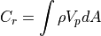
where the mass density and the compressive/primary wave speed are denoted as
 and 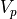,
respectively
and 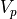,
respectivelyIn vertical direction the additional stiffness is determined as
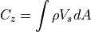
where the shear/secondary wave speed is denoted as 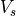.
For the sake of numerical efficiency, the finite boundary element is analytically integrated assuming that is either directed along the radial axis or along the vertical axis.
- Parameters
nodes – (float) array [NP, 2] with the radial and vertical coordinate of each node (NP: total number of nodes)
node_id – (int) array [NP, 2] with the equation number of the radial and vertical displacement of each node
data – (dict) with FEM input parameters
elem_count – (int) array [NL, 2] with number of elements in radial and vertical direction of each soil layer (NL: total number of layers)
etype –
(int) parameter to determine the consistency of the matrix
type == 0: lumped stiffness matrix
type == 1: consistent stiffness matrix
- Returns
(float) csr_matrix [NEQ, NEQ] global viscous damping matrix due to infinite boundaries (NEQ: total number of equations)
-
fem_routines.inf_stiff_matrix(nodes, node_id, data, elem_count, etype)¶ Assemble the stiffness matrix at the infinite boundaries
When modelling infinite boundaries, additional viscous damping is introduced at these boundaries. In order to avoid rigid body modes, additional stiffness has to be introduced as well [4].
In radial direction the additional stiffness is determined as
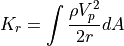
where the distance to the source, the mass density, and the compressive/primary wave speed are denoted as
 , , and , respectively.
, , and , respectively.In vertical direction the additional stiffness is determined as
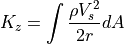
where the shear/secondary wave speed is denoted as .
For the sake of numerical efficiency, the finite boundary element is analytically integrated assuming that is either directed along the radial axis or along the vertical axis.
- Parameters
nodes – (float) array [NP, 2] with the radial and vertical coordinate of each node (NP: total number of nodes)
node_id – (int) array [NP, 2] with the equation number of the radial and vertical displacement of each node
data – (dict) with FEM input parameters
elem_count – (int) array [NL, 2] with number of elements in radial and vertical direction of each soil layer (NL: total number of layers)
etype –
(int) parameter to determine the consistency of the matrix
type == 0: lumped stiffness matrix
type == 1: consistent stiffness matrix
- Returns
(float) csr_matrix [NEQ, NEQ] global stiffness due to infinite boundaries (NEQ: total number of equations)
-
fem_routines.lumped_mass_matrix(nodes, elements, elem_id, data, elem_count)¶ Assemble the global lumped mass matrix.
- Parameters
nodes – (float) array [NP, 2] with the radial and vertical coordinate of each node (NP: total number of nodes)
elements – (int) array [NE, 4] with the node numbers of each finite element corner (NE: total number of elements)
elem_id – (int) array [NE, 8] with the equation number of each dof in each element
data – (dict) with FEM input parameters
elem_count – (int) array [NL, 2] with number of elements in radial and vertical direction of each soil layer (NL: total number of layers)
- Returns
(float) array [NEQ] diagonal components of the global lumped mass matrix (NEQ: total number of equations)